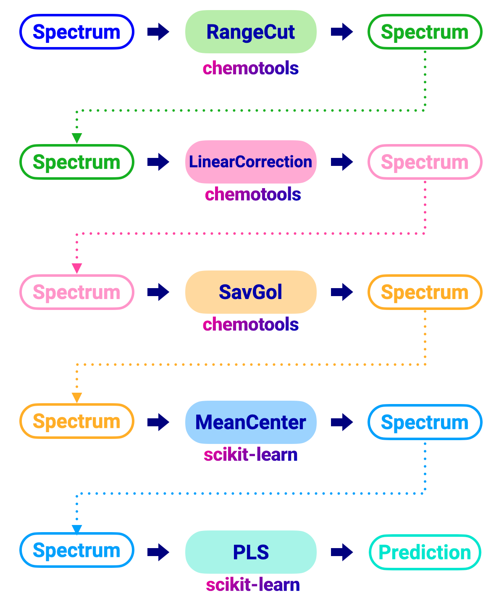
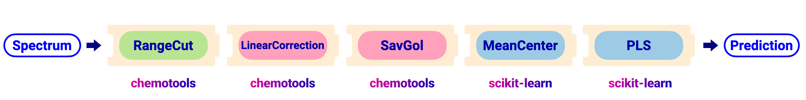
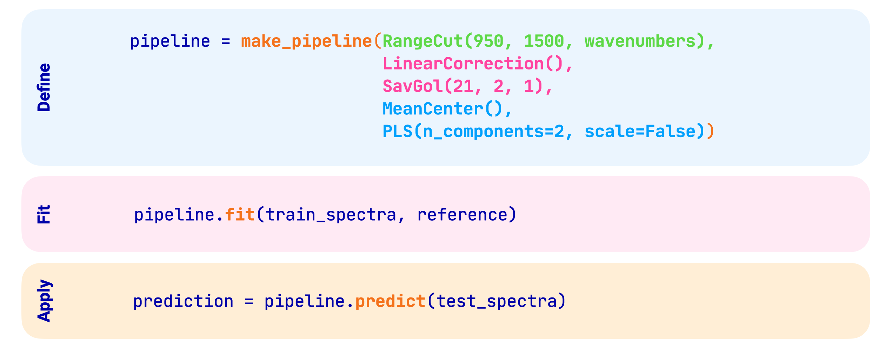

Preprocessing pipelines#
Pipelines are becoming increasingly popular in machine learning workflows. In essence, pipelines are a sequence of connected data processing steps, where the output of one step is the input of the next. They are very useful for:
automating complex workflows,
improving efficiency,
reducing errors in data processing and analysis and
simplifying model persistence and deployment.
All preprocessing techniques in chemotools are compatible with scikit-learn and can be used in pipelines. As an example, we will study the case where we would like to apply the following preprocessing techniques to our spectra:
Range Cut
Linear Correction
Savitzky-Golay derivate
Mean Centering (Standard Scaler)
PLS regression
Traditional flow#
In a traditional flow, would apply each preprocessing technique individually to the spectra as shown in the image below:
{kind=link}
The code to perform this workflow would look like this:
from chemotools.feature_selection import RangeCut
from chemotools.baseline import LinearCorrection
from chemotools.derivative import SavitzkyGolay
from sklearn.cross_decomposition import PLSRegression
from sklearn.preprocessing import StandardScaler
# Range Cut
# Define the Range Cut
range_cut = RangeCut(start=950, end=1550, wavenumbers=wavenumbers)
# Fit and apply Ranve Cut
spectra_cut = range_cut.fit_transform(spectra)
# Linear Correction
# Define the Linear Correction
linear_correction = LinearCorrection()
# Fit and apply Linear Correction
spectra_corrected = linear_correction.fit_transform(spectra_cut)
# Savitzky-Golay
# Define the Savitzky-Golay
savitzky_golay = SavitzkyGolay(window_size=21, polynomial_order=2, derivate_order=1)
# Fit and apply Savitzky-Golay
spectra_derivate = savitzky_golay.fit_transform(spectra_corrected)
# Mean Cetering (Standard Scaler)
# Define the Standard Scaler
standard_scaler = StandardScaler(with_mean=True, with_std=False)
# Fit and apply Standard Scaler
spectra_centered = standard_scaler.fit_transform(spectra_derivate)
# PLS regression
# Define the PLS regression
pls = PLSRegression(n_components=2, scale=False)
# Fit the model
pls.fit(spectra_centered, reference)
# Apply model to make predictions
prediction = pls.predict(spectra_centered)
This is a tedious and error-prone workflow, especially when the number of preprocessing steps increases. In addition, persisting the model and deploying it to a production environment is not straightforward, as each preprocessing step needs to be persisted and deployed individually.
Pipeline flow#
In a pipeline flow, we can combine all preprocessing steps into a single object. This simplifies the workflow and reduces the risk of errors. The figure below shows the same workflow as above, but using a pipeline:
{kind=link}
An outline of the code to perform the pipeline is shown in the image below:
{kind=link}
The code to perform the pipeline is shown below:
from chemotools.feature_selection import RangeCut
from chemotools.baseline import LinearCorrection
from chemotools.derivative import SavitzkyGolay
from sklearn.cross_decomposition import PLSRegression
from sklearn.pipeline import make_pipeline
from sklearn.preprocessing import StandardScaler
# Define the pipeline
pipeline = make_pipeline(
RangeCut(start=950, end=1550, wavenumbers=wavenumbers),
LinearCorrection(),
SavitzkyGolay(window_size=21, polynomial_order=2, derivate_order=1),
StandardScaler(with_mean=True, with_std=False),
PLSRegression(n_components=2, scale=False)
)
# Fit the model
pipeline.fit(spectra, reference)
# Apply model to make predictions
prediction = pipeline.predict(spectra)
It is now possible to visualize the pipeline and the different preprocessing steps that are applied to the spectra.
Pipeline(steps=[('rangecut', RangeCut(end=1550, start=950)),
('linearcorrection', LinearCorrection()),
('savitzkygolay',
SavitzkyGolay(polynomial_order=2, window_size=21)),
('standardscaler', StandardScaler(with_std=False)),
('plsregression', PLSRegression(scale=False))])In a Jupyter environment, please rerun this cell to show the HTML representation or trust the notebook. On GitHub, the HTML representation is unable to render, please try loading this page with nbviewer.org.
Pipeline(steps=[('rangecut', RangeCut(end=1550, start=950)),
('linearcorrection', LinearCorrection()),
('savitzkygolay',
SavitzkyGolay(polynomial_order=2, window_size=21)),
('standardscaler', StandardScaler(with_std=False)),
('plsregression', PLSRegression(scale=False))])RangeCut(end=1550, start=950)
LinearCorrection()
SavitzkyGolay(polynomial_order=2, window_size=21)
StandardScaler(with_std=False)
PLSRegression(scale=False)
Note
Notice that in the traditional workflow, the different preprocessing objects had to be persisted individually. In the pipeline workflow, the entire pipeline can be persisted and deployed to a production environment. See the Persisting your models section for more information.